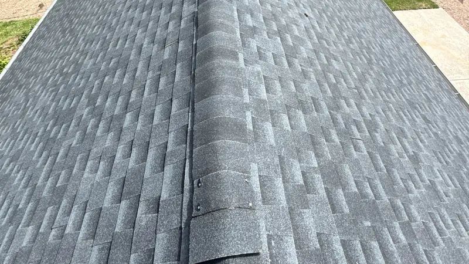
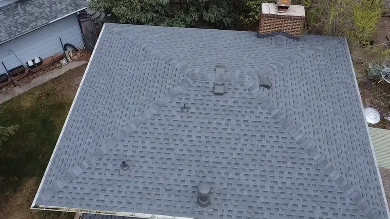

Roof warranties
Roof warranties, in plain words
A roof comes with two kinds of warranty, from two different places. Here's what each covers, what to get on paper before you sign, and what can cancel the coverage later.

Two warranties on every roof
The workmanship warranty comes from the roofer. It covers how the roof was put on: the nailing, the flashing, the details at walls, pipes and chimneys. The manufacturer warranty comes from the company that made the shingles, and it covers defects in the product itself.
A leak from a badly set pipe boot is a workmanship problem. Shingles that crack or shed their granules years too early are a product problem. Knowing which is which tells you who to call first.
What to ask for in writing
- Who backs the workmanship, and for how long, written into the contract itself.
- Which shingle line goes on, by name, so you know whose terms apply.
- Whether the maker's coverage needs the roof registered, and who does that.
- What happens to each warranty if you sell the house.
- Who you call first if something goes wrong, and how you reach them.
Manufacturer warranties, in general
Shingle makers put a standard warranty on their material. It covers defects in the shingles themselves, and on many lines it pays less as the roof gets older.
Many makers also offer stronger system warranties that can reach more of the roof's parts, and sometimes the labor. Those usually apply only when the roof is built with the maker's matching parts by a contractor enrolled in that maker's own installer program. Terms differ from maker to maker and from line to line, so read the document for the line named on your price.

What usually voids coverage
- Heavy foot traffic from other trades, which cracks shingles.
- Repairs made later with parts that don't match the original system.
- An attic that can't breathe, which cooks shingles from underneath.
- Satellite dishes or other mounts screwed through the shingles.
- Pressure washing, which strips off the granules.
How a warranty claim works
Take photos of the problem and write down when you first saw it. Call the roofer who installed the roof first: most early problems are workmanship, and the installer can tell you which warranty applies. If it's a defect in the shingles, the maker has its own claim form, and it usually asks for proof of purchase, the shingle line and photos.
Keep your contract and your written price with your house papers, so they're easy to find when you need them.
The two warranties side by side
| Workmanship warranty | Manufacturer warranty | |
|---|---|---|
| Who stands behind it | The installer. | The shingle maker. |
| What it covers | Leaks and faults from how the roof was put on. | Defects in the shingle itself. |
| What it usually leaves out | Storm damage, wear, and work by other trades. | Installation faults, storm damage, and roofs that were never registered or can't breathe. |
| How a claim runs | Call the installer who did the work. | Through the maker, usually with the installer's help. The line named on your price sets the terms. |
| If you sell the house | Depends on the installer's terms. | Depends on the maker. Often it needs a notice within a set time. |
Workmanship warranty
- Who stands behind it
- The installer.
- What it covers
- Leaks and faults from how the roof was put on.
- What it usually leaves out
- Storm damage, wear, and work by other trades.
- How a claim runs
- Call the installer who did the work.
- If you sell the house
- Depends on the installer's terms.
Manufacturer warranty
- Who stands behind it
- The shingle maker.
- What it covers
- Defects in the shingle itself.
- What it usually leaves out
- Installation faults, storm damage, and roofs that were never registered or can't breathe.
- How a claim runs
- Through the maker, usually with the installer's help. The line named on your price sets the terms.
- If you sell the house
- Depends on the maker. Often it needs a notice within a set time.
Crestone's terms
Our written workmanship terms come with your price. The shingle line named on your price sets the maker's terms. Read both before you sign.
Want to see finished roofs first? Browse our projects.
Warranty questions
What usually voids a roof warranty?
A few things come up again and again: repairs made later with parts that don't match the original system, an attic that can't breathe, satellite dishes or other mounts screwed through the shingles, pressure washing that strips the granules, and heavy foot traffic from other trades. The shingle maker's own terms are the ones that count, so read them. Our warranty page covers what to get in writing.
What if replacement shingles don't match the rest of my roof?
It happens a lot, because colors get discontinued and old shingles fade. For a repair, we find the closest match we can, and you can see a sample before it goes on. After a storm claim, ask your insurer in writing how your policy treats a roof that won't match.
Do I need gutter guards?
If big trees hang over your roof, usually yes. Leaves and pine needles clog gutters every fall and send water over the edge toward your foundation. If your roof is open to the sky, guards often aren't worth the money. We'll tell you which you are and price the gutters with and without them.
Book a free inspection
A few boxes. We'll call you back to pick a time.
Rather talk? Call (865) 830-8126. Rather text? Send a photo.